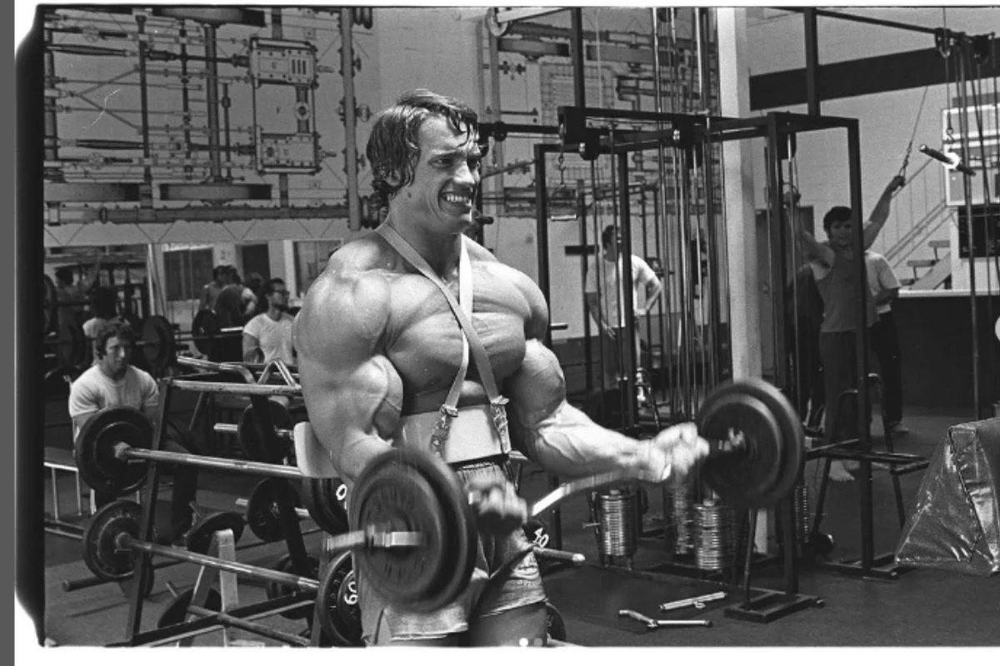

Galerie Iconique
Les Débuts Autrichiens (1965-1968)
Premier entraînement à 15 ans
Mr. Europe Junior 1965

Séance d'entraînement intensive
Roi de Mr. Olympia (1970-1975)

Premier titre Mr. Olympia 1970

Documentaire Pumping Iron (1977)

Pose mythique "Double Biceps"
Légende d'Hollywood

Conan le Barbare (1982)

Avec James Cameron sur Terminator (1984)

Préparation pour Predator (1987)
Gouverneur de Californie

Discours de campagne 2003

Investiture en tant que gouverneur

Signature du Global Warming Solutions Act
Hors des projecteurs

Avec Maria Shriver et leurs enfants

Engagement avec les Special Olympics

Passion pour les motos Harley-Davidson
Icône Populaire

Statue au Musée Grévin

Retour à Muscle Beach (2019)

Portrait en 2023